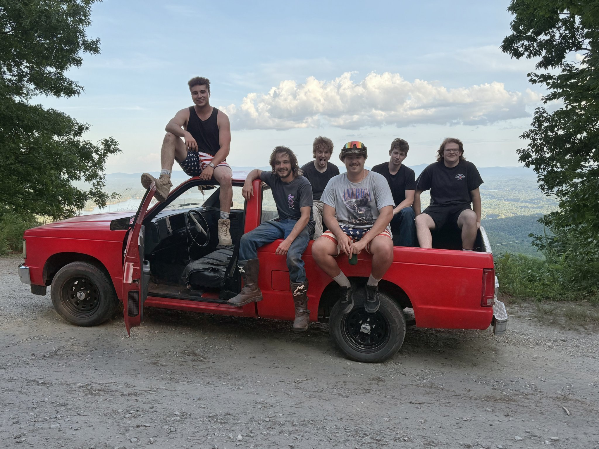

THE BOOK
Universal Schematic
BOOK IN PROGRESS IN PROGRESS
A book about my AI thesis and systems thinking. A draft exists; the language is being revised.
FROM THE STUDY
What I’m thinking. The personal side of the logbook: the book, the essays, and off the clock.
THE BOOK
BOOK IN PROGRESS IN PROGRESS
A book about my AI thesis and systems thinking. A draft exists; the language is being revised.
ESSAYS
ONGOING
Longer writing on the ideas in The Hypothesis: what AI is actually good for, found empirically. Published here as field notes grow into essays.
OFF THE CLOCK
I keep things simple. Outside the work, most of my time goes to my friends. I drive a 1988 Chevy S10, and I am usually looking at trucks, project cars, tools, or sound systems I do not need.

Nothing posted yet. Essays and drafts get posted here as they are written.